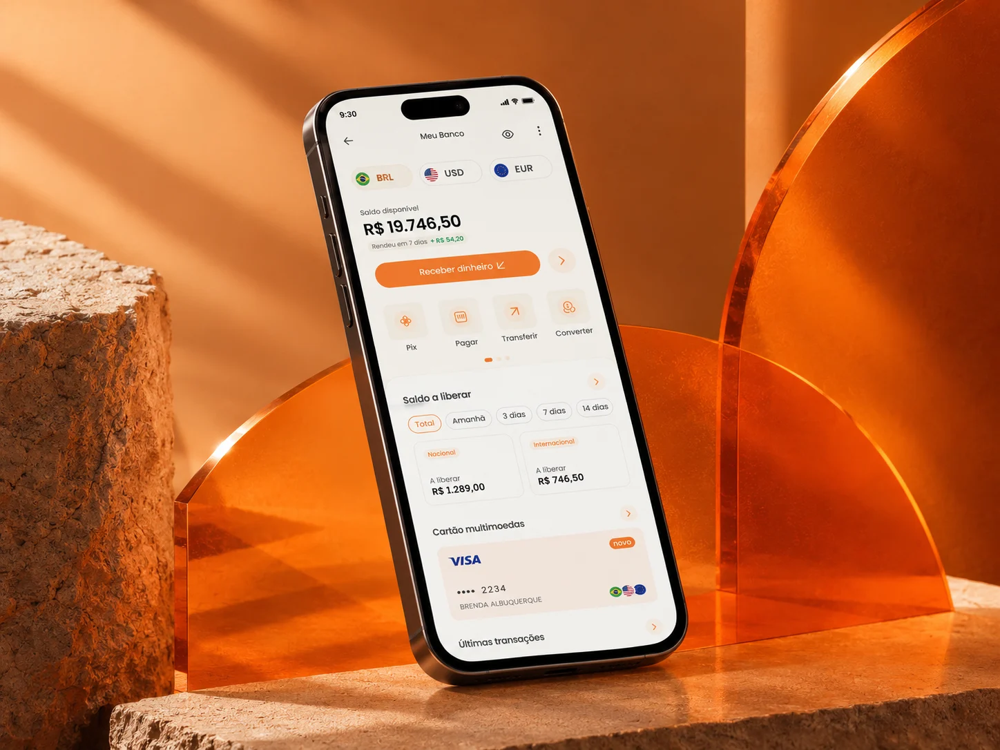
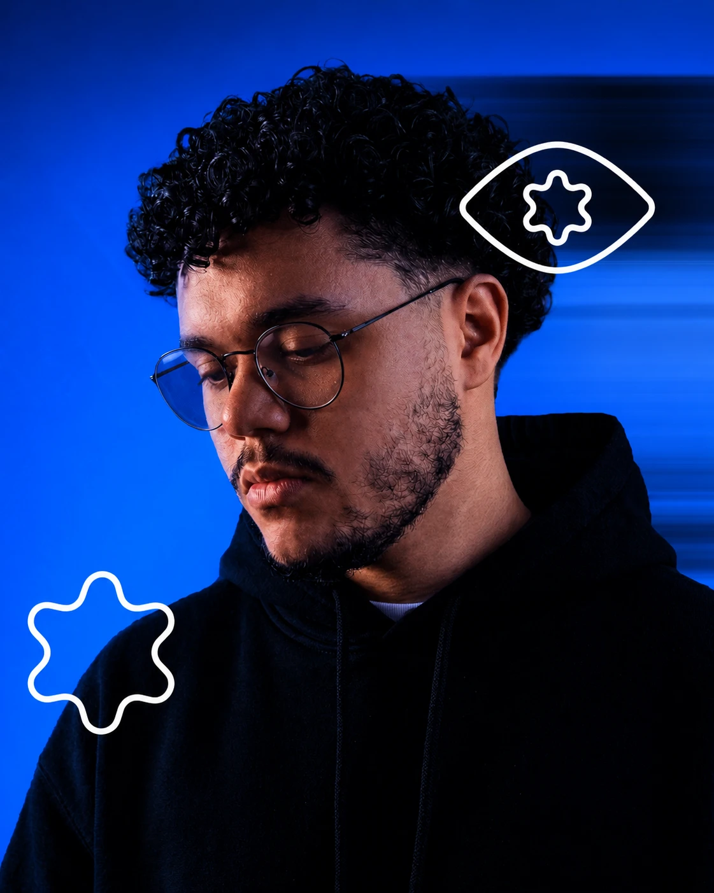
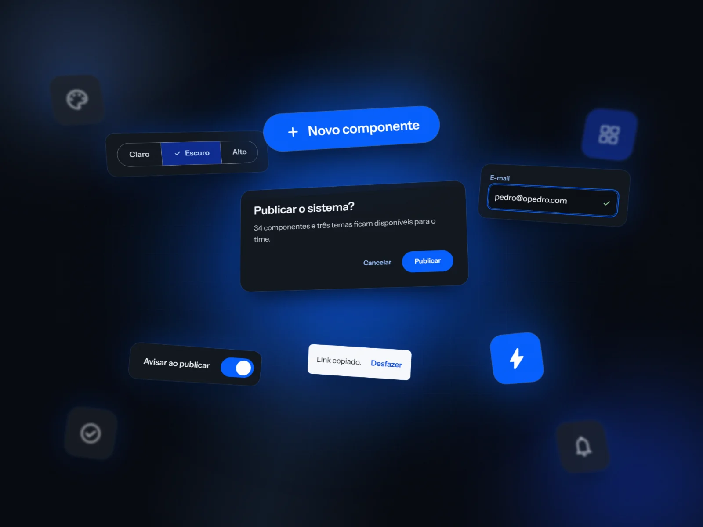
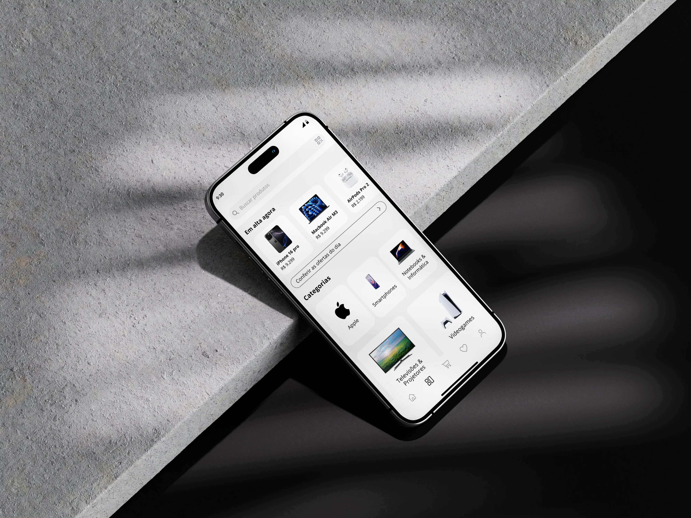
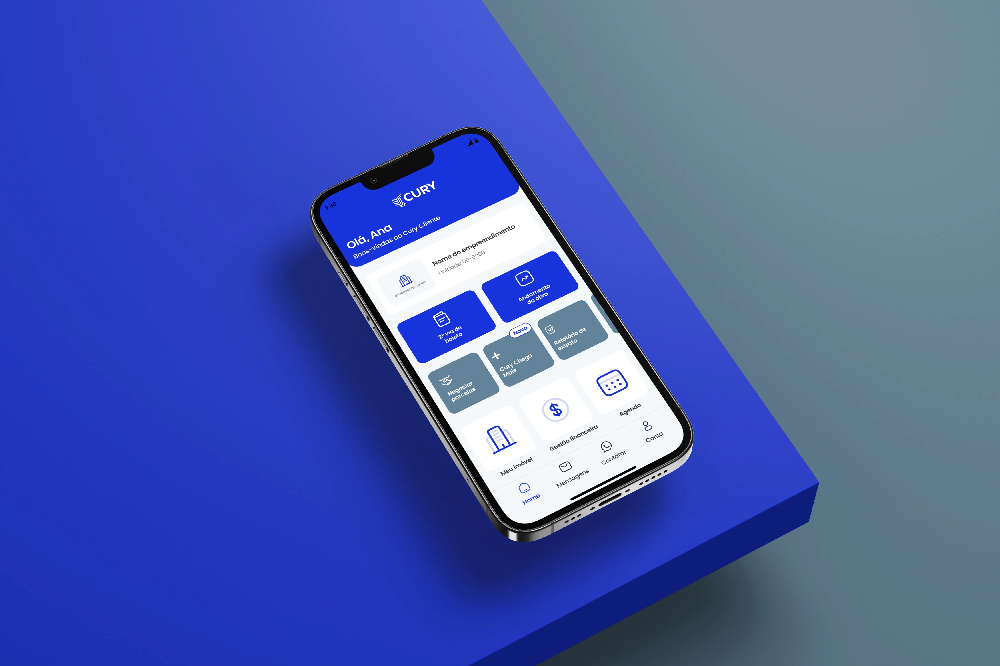
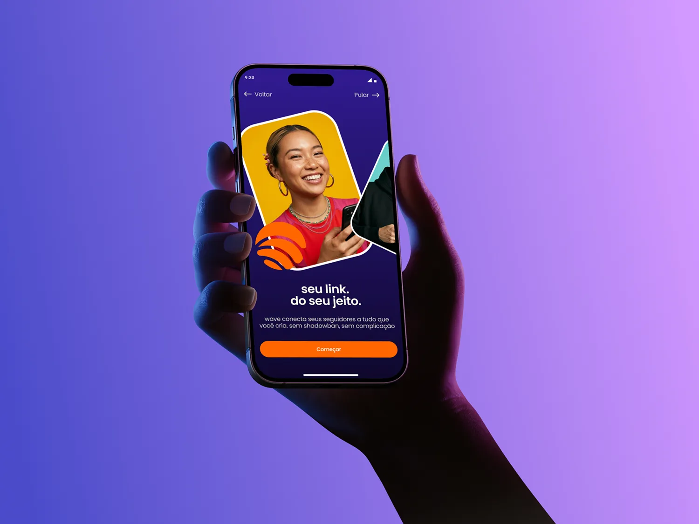
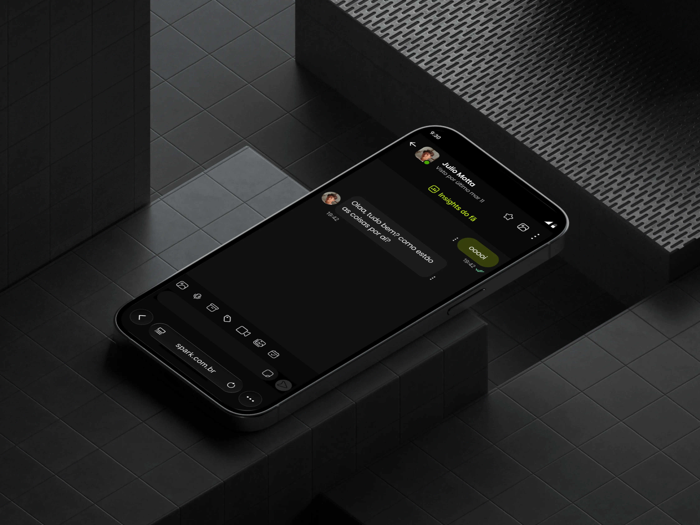
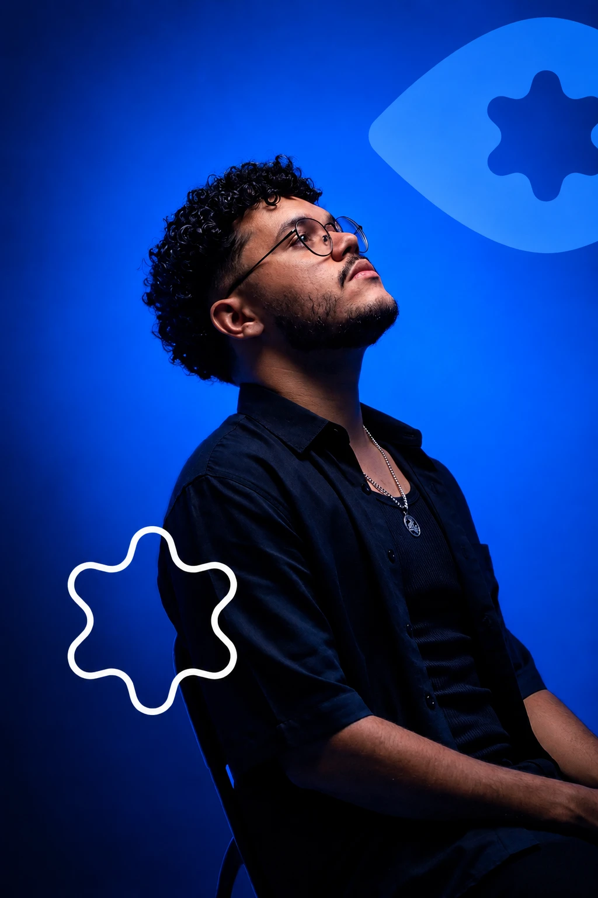

Creator Banking
Experiência financeira para criadoras de conteúdo, do primeiro acesso ao uso diário.
Olá, sou Pedro Santos, product designer focado em engajamento e conversão. Participo desde a ideação e o refino de escopo até a entrega, com bagagem em direção de arte e design gráfico.

Velocidade
Ideação
Escopo
Trabalhos selecionados

Experiência financeira para criadoras de conteúdo, do primeiro acesso ao uso diário.

Sistema autoral com 34 componentes em três temas, construído sobre o manual de marca com Material 3 como referência.

Navegação por categorias do app reestruturada a partir de avaliação heurística e benchmarking com 5 players.

Onboarding pós-compra do app Cury Cliente redesenhado a partir de 2.940 reclamações públicas.

Link in bio pensado para creators de conteúdo adulto, com proteção contra banimento desde o onboarding.

Chat entre creator e fã alinhado aos padrões mobile, com toolbar compacta e menos fricção no envio.

Sobre mim
O design que me interessa é aquele que muda o produto, não só a tela.
Trabalho de ponta a ponta — do problema à interface — em colaboração próxima com produto e engenharia.
Acredito que o papel do designer não é apenas entregar boas interfaces, mas ajudar a direcionar o produto para melhores decisões.
Como eu trabalho
Se precisa de legenda para ser entendido, ainda não está pronto.
Cada elemento na tela precisa justificar por que está ali.
A tela boa é a que o usuário atravessa sem perceber que atravessou.
Funcionar é o mínimo. O acabamento é parte do trabalho.
Contato